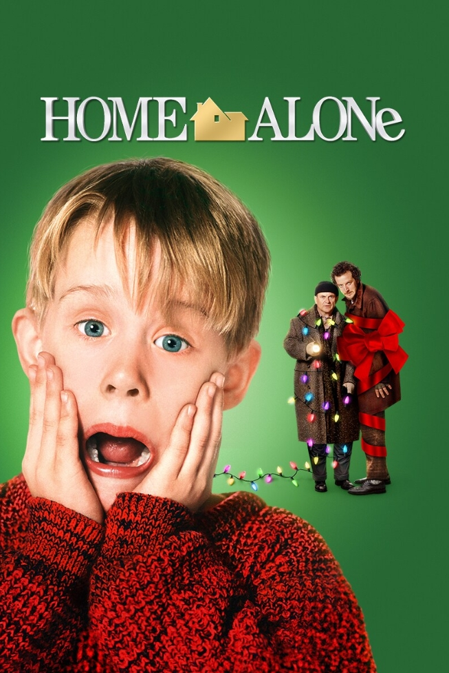
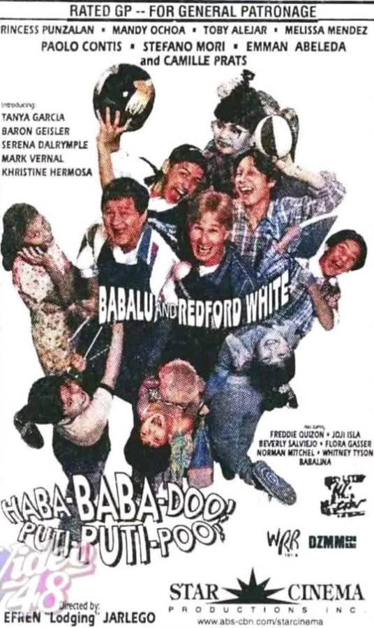

Comedy
Home Alone
(1990) Eight‑year‑old Kevin is accidentally left home alone when his family goes on vacation.

Comedy
(1990) Eight‑year‑old Kevin is accidentally left home alone when his family goes on vacation.

Comedy
A beloved 1998 Filipino comedy film starring the iconic comedic duo Babalu and Redford White.
Comedy
A clumsy British art gallery guard is sent to Los Angeles under the guise of an art scholar to oversee a famous painting's unveiling, causing massive chaos.
Follows eight-year-old Kevin McCallister, a mischievous boy who gets banished to the attic the night before a family trip and wakes up to find his chaotic household completely empty, mistakenly believing his angry wish to make his family disappear has come true. While his frantic mother, Kate, desperately tries to book a flight back to Chicago from Paris, Kevin initially relishes his sudden freedom by eating junk food, jumping on beds, and playing with his older brother's belongings. However, his holiday fun quickly shifts to a high-stakes defense mission when he discovers that two bumbling burglars, Harry and Marv (the "Wet Bandits"), have targeted his suburban neighborhood and plan to rob his house on Christmas Eve. Instead of running away, Kevin bravely decides to protect his home by rigging it with a labyrinth of ingenious, painful, and hilarious makeshift booby traps—including icy steps, red-hot doorknobs, and swinging paint cans. After successfully outsmarting and bruising the thieves, Kevin is cornered but gets rescued at the last second by his misunderstood, elderly neighbor, Old Man Marley, allowing the police to finally arrest the duo. The film concludes on Christmas morning as Kevin happily reunites with his returning mother and family, having learned to truly appreciate them, while watching Marley joyfully reconcile with his own estranged son outside.
The story follows two clumsy, out-of-work friends who accidentally land a job as babysitters and house sitters for seven chaotic, prank-pulling kids. While trying to survive the children's endless practical jokes, the duo discovers that the head maid is secretly plotting to rob the mansion, forcing them to step up, protect the kids, and save the day.
follows an inept British museum guard who is sent to Los Angeles under the guise of an elite art scholar to oversee the unveiling of the $50 million masterpiece Whistler's Mother. After accidentally ruining the priceless painting with ink and paint thinner, he sneaks into the gallery at night and replaces it with a poster replica coated in egg whites, successfully fooling the public before returning to London with the defaced original canvas.